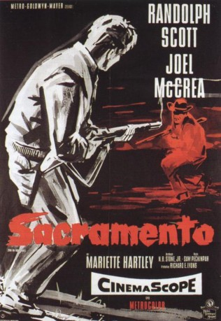
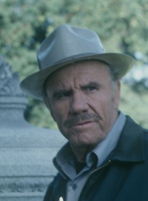
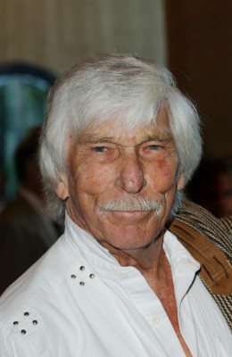
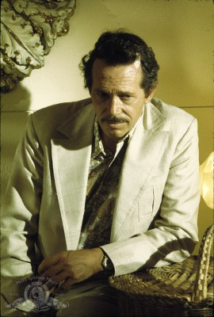

#5698 Sacramento
Alternativ: Ride the High Country
 
 IMDB-Wertung: 7.6 / 10
IMDB-Wertung: 7.6 / 10  Metascore: 0
Metascore: 0 
Der in die Jahre gekommene Ex-Marshal Steve Judd wird von der Bank in Sacramento beauftragt, einen Goldtransport aus einer Mine hoch in den Bergen bis hinunter in die Stadt durchzuführen. Sein früherer Weggefährte Gil Westrum und dessen junger Begleiter Heck, die sich in Sacramento als Schausteller verdingen, bieten Judd an, ihn zu begleiten, was dieser annimmt. Was Judd nicht weiß, ist, dass Westrum und Heck planen, das Gold zu stehlen. Auf dem Weg in die Berge treffen sie auf die junge Elsa, die ihrem streng religiösen Vater zu entfliehen sucht, um den Goldgräber Billy Hammond zu heiraten. Elsa schließt sich der Gruppe an. In der rauen Goldgräberstadt angekommen, muss Elsa jedoch feststellen, dass Billy und seine Brüder, mit denen er zusammenlebt, skrupellos und gewalttätig sind. Als Billy Elsa in deren Hochzeitsnacht vergewaltigen will, flieht sie zu Judd und seinen Begleitern und bittet um deren Schutz.
Jahr: 1962
Dauer: 93 Minuten
FSK: 16
Land: USA Studio: MGMTonspuren: DD2.0 - ,
Untertitel: Englisch, Deutsch,
Auflösung: 720p (1280x624) Größe: 4730 MB
Genre: Western
Regisseur: Sam Peckinpah
Drehbuch: Arduino Maiuri
Soundtrack:
Darsteller:
 Randolph Scott als Gil Westrum
Randolph Scott als Gil Westrum- Joel McCrea als Steve Judd
- Mariette Hartley als Elsa Knudsen
 Edgar Buchanan als Judge Tolliver
Edgar Buchanan als Judge Tolliver-  R.G. Armstrong als Joshua Knudsen
- James Drury als Billy Hammond
-  L.Q. Jones als Sylvus Hammond
 John Anderson als Elder Hammond
John Anderson als Elder Hammond- John Davis Chandler als Jimmy Hammond
-  Warren Oates als Henry Hammond
 Chet Brandenburg als Miner , uncredited
Chet Brandenburg als Miner , uncredited Byron Foulger als Abner Samson , uncredited
Byron Foulger als Abner Samson , uncredited Frank Hagney als Miner , uncredited
Frank Hagney als Miner , uncredited- Percy Helton als Luther Samson , uncredited
- Victor Izay als Jake , uncredited
 Jack Kenny als Miner , uncredited
Jack Kenny als Miner , uncredited- Michael T. Mikler als Hank , uncredited
- Carmen Phillips als Saloon Girl , uncredited
- Ron Starr als Heck Longtree
- Jenie Jackson als Kate
- Alice Allyn als Candy , uncredited
- Oscar Blank als Miner , uncredited
- Don Brodie als Spieler , uncredited
- Chris Carter als Rose , uncredited
- Don Kennedy als Policeman on Street , uncredited
- Donald Kerr als Spieler , uncredited
- Mina Martinez als Belle , uncredited
- Charles McQuary als Townsman , uncredited
- Spec O'Donnell als Pianist , uncredited
- Myrna Ross als Dancehall Girl , uncredited
- Wayne Tucker als Wes , uncredited
- Chalky Williams als Townsman , uncredited
Datei: X:\HD-Western-1960-1979\Sacramento (1962, FSK16, 1280x624).mkv seit 10.03.2017
Festplatte: HD Eastern+Western
 Es gibt insgesamt 110 Filme in der Gruppe 'HD-Western-1960-1979'
Es gibt insgesamt 110 Filme in der Gruppe 'HD-Western-1960-1979'